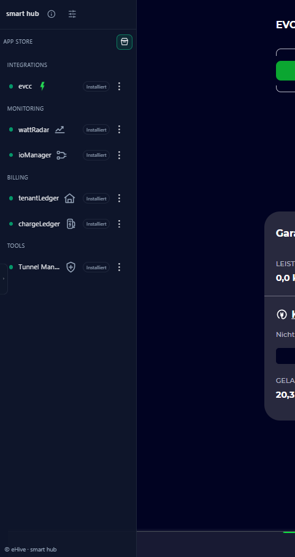

eHive
Systemverwaltung
SmartHub
Die zentrale Oberfläche für Einrichtung, App-Verwaltung, Updates, Netzwerk und Systemstatus von eHive One.
SmartHub-DokumentationeHive One · Anwendungen
eHive One verbindet Energiemanagement mit spezialisierten Anwendungen für Analyse, Inbetriebnahme, Abrechnung, Steuerung und sicheren Zugriff. Du nutzt nur die Bausteine, die zu deiner Anlage passen.

Ein System, klare Aufgaben
Die Anwendungen ergänzen eHive One gezielt. Der SmartHub hält Installation, Status und Aktualisierung zusammen, während jede App ihre eigene Aufgabe übernimmt.
Energiemanagement, Diagnose oder Abrechnung werden als getrennte Bausteine verständlich und wartbar.
Verfügbare und installierte Apps bleiben an einer zentralen Stelle sichtbar. Der konkrete Umfang hängt vom Softwarestand ab.
Viele Funktionen und Datenwege laufen direkt auf eHive One. Einzelne Dienste können abhängig von ihrer Aufgabe Internetzugriff benötigen.
Verfügbare Anwendungen
Das eHive-Zeichen neben einem App-Logo kennzeichnet Anwendungen aus dem eHive-Ökosystem. Fremde Projekte werden mit ihrer eigenen Herkunft ausgewiesen.
01
Grundlagen für Verwaltung, Energieflüsse und die Verbindung kompatibler Geräte.
Systemverwaltung
Die zentrale Oberfläche für Einrichtung, App-Verwaltung, Updates, Netzwerk und Systemstatus von eHive One.
SmartHub-DokumentationEnergiemanagement
Steuert kompatible Ladepunkte anhand von PV-Überschuss, Tarifen und Ladeplänen und führt Energieflüsse aus PV, Netz, Speicher und Fahrzeug zusammen.
Mehr über evcc auf eHive One02
Werkzeuge, die Geräte auffindbar und Energieflüsse nachvollziehbar machen.
Gerätesuche
Durchsucht das lokale Netzwerk, zeigt erreichbare Geräte und Dienste und markiert mögliche Kandidaten für eine spätere evcc-Einrichtung.
HiveScope kennenlernenModbus-Diagnose
Unterstützt die technische Diagnose von Modbus TCP und Modbus RTU und hilft dabei, Verbindungen und Register gezielt zu prüfen.
HiveBus im SmartHubMonitoring
Visualisiert Erzeugung, Verbrauch, Netzbezug, Speicher und Ladevorgänge über die Zeit und macht Lastverläufe leichter vergleichbar.
wattRadar-Dokumentation03
Anwendungen für wiederkehrende Auswertungen rund um Laden und verteilte Energie.
Ladeabrechnung
Bereitet Ladevorgänge von Elektrofahrzeugen als Monatsauswertung auf und unterstützt PDF-Ausgabe, Versand und optionale Archivablagen.
chargeLedger-DokumentationMieterstrom
Strukturiert Energie- und Verbrauchsdaten für Mieterstrom-Anwendungen und unterstützt nachvollziehbare, wiederkehrende Auswertungen.
tenantLedger-Dokumentation04
Signale sicher einordnen und eHive One bei Bedarf von außen erreichen.
Digitale Ein- und Ausgänge
Überwacht digitale Signale und bindet sie in das Energiemanagement ein, etwa für fachgerecht geplante Anwendungen rund um § 14a EnWG und § 9 EEG.
ioManager-DokumentationFernzugriff
Richtet einen optionalen verschlüsselten Fernzugriff ein, ohne die lokale Oberfläche von eHive One direkt im Internet freizugeben.
TunnelManager-DokumentationVisuelle Automatisierung
Erstellt browserbasiert eigene Abläufe, verbindet Datenquellen und verarbeitet Ereignisse mit einem visuellen Flow-Editor.
Verfügbarkeit: ausschließlich der eHive-One-Variante mit 2 GB Arbeitsspeicher vorbehalten.
Node-RED kennenlernenGebäudeautomation
Verbindet ausgewählte evcc-Datenpunkte mit KNX-Gruppenadressen. Abhängig vom Datenpunkt können Werte visualisiert und geeignete Funktionen in beide Richtungen verknüpft werden.
KNX Bridge ansehenIn Erprobung
Diese Anwendung wird vorbereitet, ist aber noch nicht allgemein verfügbar. Funktionsumfang und Veröffentlichung können sich ändern.
Wird für den Betrieb öffentlich nutzbarer Ladepunkte vorbereitet. Die Anwendung befindet sich noch in Entwicklung und ist nicht allgemein verfügbar.
charge&go Vorschau ansehenGut zu wissen
Welche App installiert werden kann und welche Funktionen bereitstehen, hängt von eHive-One-Modell, SmartHub-Version, Konfiguration, Schnittstellen und angebundenen Diensten ab. Installationen und Updates sollten über die vorgesehenen SmartHub-Funktionen erfolgen.
Aktuelle Software-DokumentationFür deine Energieanwendungen.
Eine Plattform für Energiemanagement, Analyse und die Apps, die zu deiner Anlage passen.
eHive One